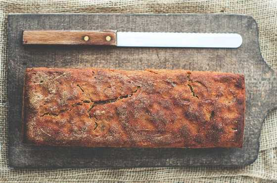
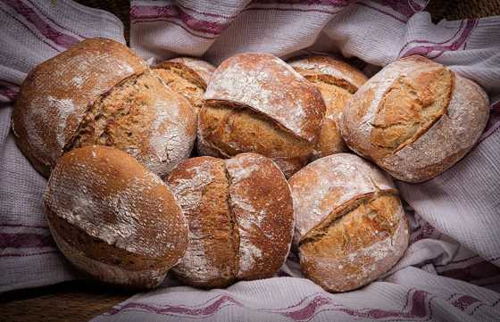
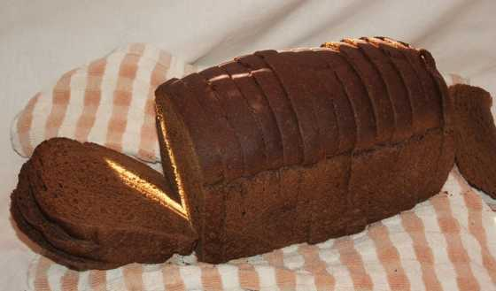

写真はフリー素材のイメージで、店舗の実際の様子・商品ではありません。実際の写真はお店ご提供のものに差し替えます。
お店のこと
ベーカリー リュールは、香川県高松市香西北町にある、2024年3月20日オープンのパン屋さんです。お店のInstagramでは、パンに国産小麦を100%使用していることが案内されています。
確認できたのは、所在地・開店日・国産小麦100%使用の案内・Instagramです(出典: お店のInstagram)。
店名の「リュール」は、フランス語の lueur(かすかな光)と同じ響きです。店名の由来は確認できていないため、このページの「朝のかすかな光」というイメージは制作側のイメージです。
パン・メニュー
国産小麦100%のパン。商品名・価格・営業時間・定休日は準備中です。最新の情報はInstagramをご覧ください。

Sunset-over-the-wheat-field-featured / Dreamy Pixel / CC BY 4.0

Fresh Rustic Bread (Unsplash) / Artur Rutkowski (alienowicz) / CC0 1.0

Sourdough Loaf (217346645) / Dana Hutchinson / CC BY 3.0

Home made sour dough bread / Tomascastelazo / CC BY-SA 4.0

Dark rye bread / Glane23 / CC BY-SA 3.0

Baguettes - stonesoup / jules / stonesoup / CC BY 2.0

Croissants au beurre (18953292873) / Herry Wibisono (herryway) / CC0 1.0

Mixed flour bread in the oven C IMG 1676 / Anneli Salo / CC BY-SA 4.0

Oven for baking bread at Jexhof, Bavaria 02 / Kritzolina / CC BY-SA 4.0

Bread from the wood-fired oven, town Sant Esteve / Juan Emilio Prades Bel / CC BY 4.0

Brick-oven-thumbnail / Beboplu / CC0 1.0

Warm light in the dining room (Unsplash) / eberhard grossgasteiger / CC0 1.0

Burning-candle / USER-62114 / CC0 1.0
口コミ(イメージ例)
以下は制作側が作成したイメージ例で、実在のお客様の声ではありません。
イメージ例
国産小麦のパンと聞いて、朝ごはん用に選びたくなりました。素朴な味わいを想像しています。
イメージ例
香西のあたりでパンを買えるお店があると、散歩のついでに立ち寄れそうで楽しみです。
イメージ例
小麦の香りを感じる焼きたてのパンを、休日にゆっくり味わってみたいです。
アクセス
| 所在地 | 〒761-8011 香川県高松市香西北町３７５−１ |
|---|---|
| 電話 | 準備中 |
| 営業時間 | 準備中 |
| 定休日 | 準備中 |
| @bakery.lueur |